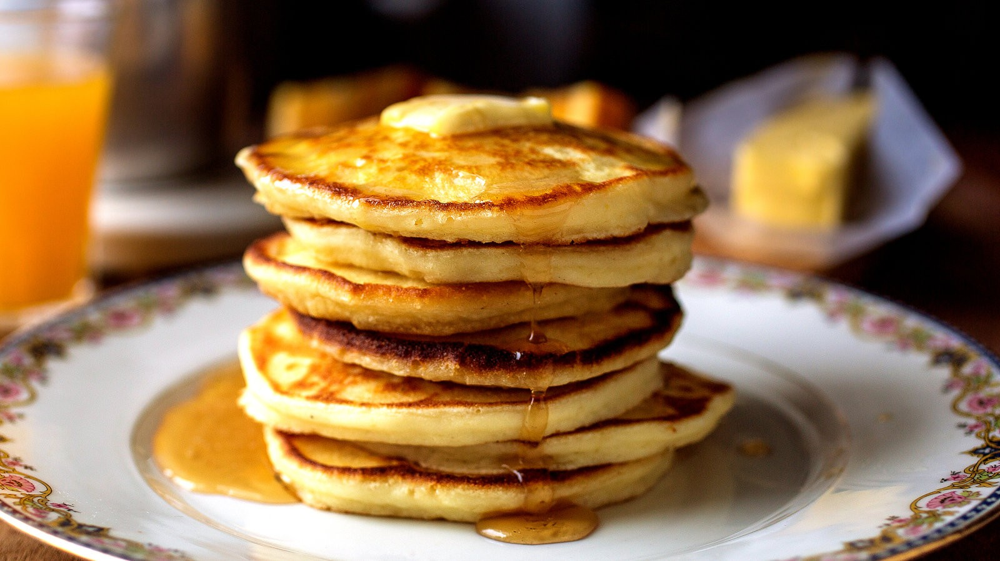

valgis
valgis - Žodynas

menu
bigmouthcomix
Žodynasbigmouthcomix
Žodynas Pagrindinis > ŽodynasReikia Skaityti
Žodynas
Aš užsiėmęs
2020Žodynas
Ahmilena
2020Žodynas
Miesto žodyno redaktoriai
2020Žodynas
Kūdikių kepurė
2020Žodynas
rilis
2020Visos Kategorijos
ŽodynasPopuliariausi
Atšiaurus
2019
Vibe ilgis
2019
nov 25
2019
Henny Wax
2019
Laive
2019
Įdomus Šiandien 2020
HQD CBD
2020 Žodynasmetai
Žodynas
Owenas
Žodynas
Jnr
Žodynas
valgis
Žodynas
2020v. norėti priešingo lytie narion. priešingo lytie attova atrodo pakankamai gera, kad galėtų valgytiv., valgytiv.Aš valgiau jąn. ji valgov., eikime pavalgytiGauti blowjob iš hott viščiukų, karštų višči
Turinys:
v. norėti priešingos lyties narion. priešingos lyties atstovas atrodo pakankamai geras, kad galėtų valgyti
v., valgyti
v.Aš valgiau ją
n. ji valgo
v., eikime pavalgyti
Gauti blowjobs iš hott viščiukų, karštų viščiukų apskritai, iškaulinti karštus viščiukus, didelis vakarėlis su daugybe karštų viščiukų.
Praeitą vakarą iš šio viščiuko pavalgiau.
bendras patvirtinimo terminas, sinonimas tokiems žodžiams, kaip nuostabus, puikus, suteneris, ligonis ir tt. Terminas kilo iš nuostabos, kai gaunami McDonald s valgiai, kai jie yra iššvaistomi.
Johnas: Tu, vyras, praėjusią naktį laimėjau kaip 100 USD kazino, tada nuėjau į striptizo klubą!
Valdas: TAS MEEEEAAALLLL
Jonas: tai yra miltai bro.
Aš supaprastinau, kartais malonesnį būdą pasakyti valgyti mergaitę. Kreipdamasi į valgymą, ji yra jūsų valgis.
Tu vėliau būsi mano valgis
„Tu gali būti tavo geriausias draugas“
Maitinimas tau šį vakarą bro?
daiktavardis, apibūdinantis berniuką, kuris yra toks metroseksualus, kad pasijuto gėjus, net ir jis nėra lizdas. Valgis yra berniukas, kuris yra apsėstas dainavimo, palaiko savo plaukus, įdegį ir drabužius
Katie: ar pastebite ką nors kita apie mane? aš nuėjau įdegti!
Lauren: Taip, aš galiu pasakyti, kad jūs iš tikrųjų ieškote miltų. tai mane išvadino
Tommy: Aš esu tavo brolis, tavo geriausias draugas iki laiko pabaigos (dainuoju)
šaunus vaikinas: miestietis, jei tu pavalgysi, aš būsiu tu
Vieną patiekalą suvalgo neseniai studijavę studentai / universitetų absolventai, ypač didžiųjų laisvųjų menų studentai, kurie yra per skurdžiai, kad galėtų sau leisti valgyti kelis kartus per dieną. Gali būti sudarytas iš bet ko, tačiau paprastai jame yra kažkoks „tikras“ maistas (daržovės, net jei konservuoti) arba arti, pavyzdžiui, televizoriai. Paprastai valgoma vėlyvą popietę, kad naktį išvengtų bado.
Fredericko skrandis virpėjo, jis buvo beveik 7:00 ir jis dar turėjo valgyti.
Daiktavardis. Šūdas, kurio dar nevalgėte.
Aš nemeluoju, koks skonis yra maistas. Man tai tik kažkas, kad vėliau galėčiau išsisukti.
bigmouthcomix
Populiariausi
Guilfordas, CT
stebuklų riešutai
Populiarūs Skelbimai
Luna slapyvardis Gurras Sultingas šuniukas neegroidas joskinimasKategorijos
Žodynasbigmouthcomix | ar | bg | bn | ca | cs | el | es | fi | hi | hr | hu | id | it | iw | ja | ko | lv | ms | mr | nl | no | pl | pt | ro | sk | sl | sr | sv | ta | te | th | tl | tr | uk | ur | vi | zh
Sitemap
Posted by Jack  Read more
Read more  Comments (15)
Comments (15)  2020.10.27 08:01
2020.10.27 08:01